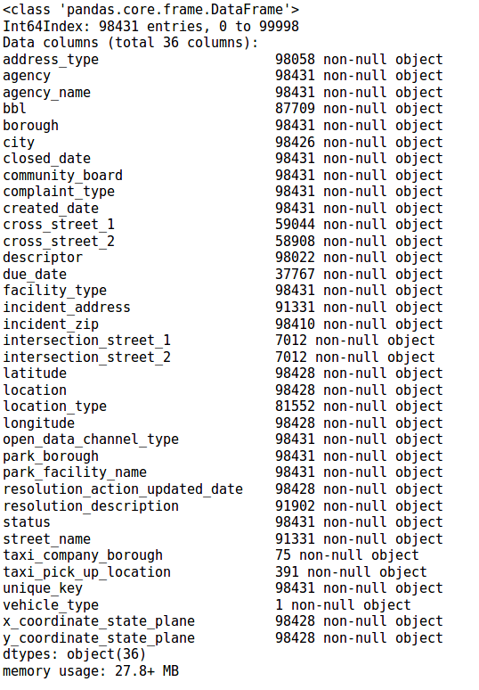
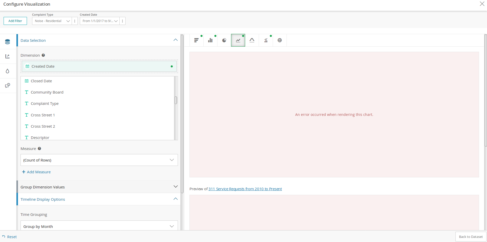

Data Munging:
As with most open data sets, there's a lot to explore and look through. With over 18 million rows and 41 features in just the past year, there was a lot to look through and make decisions on. A subset of 100k was worked on initially for cleaning before deploying on the larger data set. What was needed to figure out was-
How to get this:

To something more useful like this:

We get there by lots of coding! There were plenty of redundant features as well as null and garbage inputs(for full cleaning analysis- see MVP notebook on Github):
An Example:
print("Number of Community Boards: {}".format(api_df['community_board'].nunique()))
Number of Community Boards: 74
There are only 59 community boards in NYC!
api_df_cleaned = api_df[api_df['community_board'].isin(community_board_list)]
Number of Community Boards: 59
Regression Predicting
Once data cleaning was completed it was time to find a model to predict estimated time of
outcomes.
Random Forest & Gradient Boost models were picked because of their robustness to overfitting. A Neural Net was considered but was decided against because the ability to rate feature importance was considered a good education factor. Random Forest and Gradient Boost provided this.
random_forest = RandomForestRegressor()
random_forest.fit(X_train, y_train)
print('R2 score {}'.format(random_forest.score(X_test,y_test)))
R2 score 0.7741774171081134

Feature importance is helpful because it allows us to make recommendation on specific items that may have a causal effect on outcome. This has to be approached cautiously. Note that NYPD is rated as a high feature importance. This makes sense considering that NYPD handles the largest share of complaints. By their nature as well, NYPD complaints also tend to be closed faster, as opposed to an inquiry about taxes made to Department of Finance.
gradient_boost = GradientBoostingRegressor()
gradient_boost.fit(X_train, y_train)
print('R2 score {}'.format(gradient_boost.score(X_test,y_test)))
R2 score 0.7141774171081134

We can also compare feature importance by model. Note that many of the same features show up in both.
Data Dashboarding:
There's a problem with trying to visualize large open data sets...

It’s hard to do!
Visualization on NYC’s OpenData is erratic at best. During the course of this project I never once got it to work. This lead to some contemplation on what might be a better way to display information of interest to the average data seeker.
With this in mind, I set out to create example dashboards that are updated daily - using SodaPy and querying Open Data’s own information. This gave me an advantage of minimal storage locally, and thus giving me more space to create impactful maps to visualize interesting data.
These dashboards can be created using SQL calls using the existing API:
time = datetime.utcnow()-timedelta(days=7)
time_string = '{}-{}-{}T00:00:00.000'.format(time.year,time.month,time.day)
query = "created_date > '{}' AND complaint_type LIKE '%Homeless%' ".format(time_string)
results = client.get(database_311, select=select_sql, where=query, limit=100000)
Findings & Conclusion:
Regression prediction is hard on a large data set as 311. Auto-closes and non-closes are particularly problematic as the sheer number of them can mask the problem. There are plenty of issues with the data. While there does appear to be some standards when it comes to complaint types and descriptions, there also is a significantly large number of one off complaint types.
311 seems to recognize this and their web app limits their users to 7 specific complaint types. At the same time it directs more specific inquiries to their respective departments.
Recommendations would still include dealing with the auto-close problem. Standardizing complaints down to a core 20-30, or having an “Other” category rather than over 200 descriptors might also be a good way to get more accurate data. It’s also unclear if agencies are responsible or measured by their 311 report performance.
The Future:
311 is a great tool to measure complaints and see what concerns New Yorkers. There is a lot of interesting data that can be parsed over. In the course of this project I often found myself getting distracted by something interesting that popped up in the data. It’s no wonder it’s the #1 downloaded data set for NYC Open Data.
Going forward I will continue to create interesting and unique dashboards on the data. I also will continue to refine my regression model, and create a predictor that takes user input and gives them a time to close & agency responsible (perhaps “Can 311 Fix It” ?)
Here are some tools I used for this project: